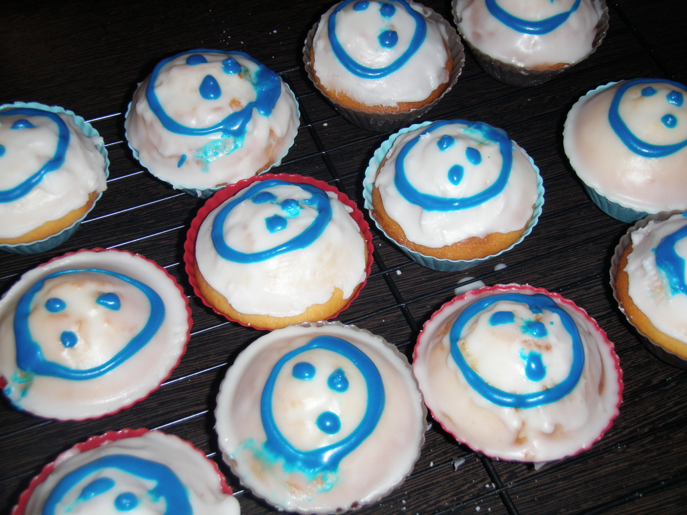

Good morning from the land down under and welcome to World Plone Day 2010! It's right on the hour (well, just after now) and 28 April 2010 -- and yes, that's World Plone Day to the uninitiated. To celebrate and to mark the occasion, I'll be holding a bit of a discussion today about what Plone is, why it's so useful, and what we, as users, are hanging out for in Plone 4 and above. But, what fun is that without sweets to eat? And what's potentially tastier than Plone? Plone cupcakes!
Thanks to some great work by my lovely partner, she's whipped up some cupcakes for WPD. I didn't do much save for helping with design and icing -- woo! Here's the end results:
Okay, so the CMYK colour might be a little off and I'm thinking I'm not conforming to all Plone logo usage guidelines but they look good. Haven't tasted them yet but I'm sure they'll be excellent. I had thought of a line like "Open Source never tasted so sweet", but I think I'll let that go.
Viva la World Plone Day!
Comments !